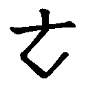

我大學畢業後繼續留母校研究五年。時值第二次大戰期間，獲恩師推薦以日本籍民身份到日本京都「東方文化研究所」供職，吸收該地研究風氣，學習北京話，業餘參加京都大學教授倉石武四郎主持的中國話詞典資料的翻譯工作。終戰前兩年回母校南方人文研究所供職，負責中文日譯的工作。因此對兩種語言的對照感覺興趣，戰後為著修練中文更加痛感中文字典的需要，翻開我的編著年表一九五○年欄下有「國語辭典未收辭彙」一目。記起我當時確曾有補充中國話字典的計畫。當時我是隨得隨記，羅列寄稿。報社編輯人則認為不成體例不續登，亦就中斷。但我繼續記錄在商務版國語辭典（汪怡編）。這些資料一部分後來遭損毀。
由臺大中文系退休後，即著手計畫編臺語字典、國臺對照辭典。一九七九年運參考資料到美國東岸巴城郊外蟄居，先著手國臺對照稿。兩年後告一段落，我檢寄部分稿件回臺北請王玉老介紹洽商出版事宜。結果可能因為不合商機時宜，方音符號的印刷亦成問題，報社意願不大。留下了玉老撰寫的國語日報注音排印校稿三頁一張題目：讀了吳先生的「國臺語稿」以後的感想。我只好暫時放棄，改向編臺語字典，竭力搜集有關音字脫節的臺語資料。
一九八六年立春日在美國出版「綜合閩南臺灣語基本字典」上下兩冊，是根據專工繕寫底稿拷貝印刷訂成的。（後來，一九八七年由臺北文史哲出版社縮小影印再版）。
一九八六年五月攜病妻返臺。一九八八年十二月潮州街臺大宿舍遭回祿。翌年五月喪偶，十一月再返美國僑居地。越月即開始重拾國臺對照稿，一九九二年二月告一段落。三月隨身攜全稿回臺北。
這書本來擬定書名為【國臺對照活用辭彙】，不敢說是「辭典」。現因周邊人士的鼓勵改為【國臺對照活用辭典──分析、詳注廈漳泉音】。中國(漢)字的標音用的是中國「注音符號」。這「注音符號」是根據中國篆字的字形、字音加以符號化的標音工具，在中國文字發展史上與漢字有淵源關係，日本學者曾利用它在日本推動中國話教育，可以比美英文字母、日文假名。而標注臺語語音用的是「臺灣方言符號」。而這套臺語標音符號則由國際聞名的漳州籍音韻學專家（又是虔誠的基督教徒）朱兆祥教授設計，由前臺灣省國語推行委員會審訂頒行的。民國三十五年在臺灣頒行這套符號時，擔任該會的主任委員是古韻學專家魏建功（天行）教授。──不是區區我的杜撰。
一九九三年起，這個稿件的中國字部分先由打字行著手開打。（詳後）。
辭典」是學習語言的工具之一。人類呱呱墜地即學習父母的語言，所謂母語。長大受教育學習文字，則要依靠字典的幫助。在臺灣受過日文教育的人，我相信每人都有一本漢和字典，一本日本國語辭典。五十多年前國民政府接收臺灣，臺灣人一再遭遇到溝通思想的工具的困擾。可是市面上只泛濫著中國話辭典，戰後初、中期一直沒有出現過「國臺對照」的字典。即使有了亦沒有見到廣泛的利用。可能是：沒有完全被日語同化的臺灣方言殘命還魂，對國語的理解大有幫助。再加上日本教育「遺毒」──尊重國語的美德以及推行上的高壓強迫政策，教育家主張「直接」法等等…減低了「國臺對照」的需要（？）。（個人則利用中日對照字典。)
我而立之年才開始學習北京話，七年後以準日本語族的身份在中國的大學授國語課，在個人覺得是一種奇遇，亦是萬幸，因而踏上「閩南語史探源」的路。到了退休的時候，發覺中國語有分裂「普通話」與「國語」的跡象。這數十年來入手的有關學習中國話的書，在字形、字音方面確實已發生偏差，過去我在這個分野裡一直追求正確標準。編字典是要提供典範、標準、正確，現在竟將要為著認字形辨字音手忙腳亂，顧不得標準。何況從事語文教育的朋友透露「師範」學校培養不出夠格「垂範」的人材。實際上我已「聽」到學校裡和社會上的「中國」音確實脫了節。──（我不敢再想編「典」了。)
本書中的臺灣話部份，我為著音字脫節的詞語，所謂有音無字的問題傷透了腦筋，雖然近年兩岸學術界的先進，已經提供了不少擬字資料。但一方面因為創見過多，甚至矯枉過正，呈現百花齊放可喜可憂的現象。因此且不說我前此推出去的閩臺語基本字典無法產生很大作用。在本書裏，國臺對照力求對應正確，但是，這是一種長編資料不敢標榜「典」。臺語的文字表達只能做到：儘量借重前人的擬字，並列語源本字，供高明人士取材而已。
這「國臺對照辭彙」完稿到現在，一再增刪修改、打字、校對、臺語部份，由部份注音改全部注音及加注廈漳泉音，所以拖延將進十年之久。我卻越發不急了。因為本來是計畫供應社會上的需要，應「急」，可是這個「急」早已經過去了。經過幾十年的時光我才發現早已有人出版了這類的書。只是沒有進入我聽聞的範圍。到了十年前臺語母語運動浮上檯面，應運而生的厚實的臺語、國臺對照詞典接踵出現，親眼看到了成品，覺得難能可貴，我更加不急了，而且再不敢想編字「典」了。失卻了信心。實際上學習都來不及，怎麼編「典」？雖然參考資料不少，疑問卻也隨之增加。本來是為「人」著想的工作，現在要改為為「己」。進行對照、比較、自問自答，多彙集多存疑，多留異字、異形讓參考這本書的人自由選用。如果有不適用的就讓它自然淘汰。
我又發現一個事實。我學習中文注重標準，編書標正音，可是呢，我發現我的話我的口音在社會上行不大通了。用語亦在不知不覺之中漸變。我買到一本「大陸和臺灣詞語差別詞典」，大陸出版的。外國人能辨兩岸的播音。語言在變，語法能不變嗎？國臺對照的辭典最重要的任務在於了解彼此的共同性及各自的純一性，同時亦要能使它與方言之間劃分明顯的界線。但是現在這界線逐漸模糊了。
不但兩岸的詞語已有差別，臺灣島上的國音、國語亦在變。見微知著。例如：抽血說成「抽（雪）」。「我母親會念」，意思是國語的「我母親會念叨」。臺語可以單音說「念」，國語必須說成「唸叨」。報紙的刊頭出現了一條「掃黑抓大尾」。這「尾」字摻入了臺語用法「一尾鱸鰻」（＝一條鰻魚＝一個流氓）的「尾」。
上列的例子不過是我的遲來的發現而已，大學裡已有年輕學者早就搜集國語中的方言借詞，方言中的國語借詞製作學術論文了。現在還知道哪些是借詞，但是久而久之就會被吸收或互相吸收消化。混合「國、方」或「國、臺」詞彙，新陳代謝就會形成新的「臺灣國語」。且不談願不願看它自然形成，「國臺對照辭彙」的收集成書若不能「補救」（？）這種「不健全」的混合而貢獻語言（國語、方言）的純一性，那就只有徒存一個時代的語言現象記錄而已。事實上這本辭彙的編刊如果得不到中年代、年輕輩的正常（我期待的）的應用，我就不但不敢期待它能「豐富共同語」，更會覺得對於「維持共同語的純一性」，無濟於事了。
用以表達中文、漢語的三要素是：形、音、義。字形：字體有古今異同。本書自是偏重現代。現代中文字，漢字一度產生了繁體、簡體的問題，有區分，各自為政。簡體近時在臺灣似乎已解禁了。本來就有一些。本書揭示繁體為主、為正，偶並列簡體，不排除。字音：兩岸的中文音系都以北平、北京為基礎、為準。可是到如今只要多翻一兩本字典即時就會發現兩岸彼此在選音、字音的基準態度，已有顯著的差別出入。在本書裡，字音以近幾十年來在臺灣用於學校教育的「中國音」為主。兩岸異同並列，止於記錄、對照，不敢有所去取，可是在對比之下偶而難免站在一個學習中文者的立場有微見，就帶上一筆或隱現學徒的看法，不算定奪。值得一提的是，使用本書的人只須多掀兩頁就可以發現在臺灣教育界一度成問題的「又讀」的音，有的被扶正了。保留「又讀」可能重「民主」，但「教」「學」兩都不便。詞義：以臺灣版國語（詞）典的釋詞為基礎，詞彙準此，以所收單音詞為中心，酌收詞與詞條有關聯的生活用語，一般常用複音詞。目頭字，詞條都中臺對譯，例句則視其繁簡，或整句對譯或對照一部分。
〔收字〕：以「國音常用字彙」（教育部國音統一籌備委員會）為基礎，有增無減，增加的多是對照「新華字典」（大陸商務印書館發行）所得。亦參考過「普通話閩南方言詞典」（大陸、福建、廈門大學）。這普閩典收字以新華字典為準，有所去取，收詞則以「現代漢語詞典」（大陸商務館）為準，注重現代、簡要。本編，雖參考過上列各書，在收詞方面，因個人事業更加精簡。再說，因為參考過普閩典，除了對照臺灣國語，普通話，臺灣話以外，多出副產物──廈門話與臺灣話的對照。不過不能全面的。結果發現廈門語與臺灣語之間，在語言上特別是用語上，難免產生分裂現象。
〔本書主要的結構〕：由首揭目頭字為起始，字音以教育部頒布標音符號第一式「注音符號」的拼音為序，同音字以筆劃數多少為序。每字先列出舊反切，切腳字。反切字多引自康熙字典、普通話閩南話詞典所載廣韻、集韻的反切。必要時才翻廣韻、集韻原本，目的不在於提示古韻音，只在驗取現行國音、臺音與古反切一致與否，即在於了解來歷是否正確。結果，大致地說，閩南音比中國音接近反切音。與反切，切腳不一致的閩南音（文音、語音），有在方言本身上發生的演變音，有訛讀的音，半邊音。訛變音以外大都能與反切求得有規則性的條例。駱嘉鵬君的「廣韻音韻辨識法」碩士論文足夠供應這方面的知識。我沒有時間應用。而在檢驗反切與現行音的偏差之間，發現普閩典把歸納廈門音與反切音的對應關係所得的規則反用於廈門音訂出字音時，出現與現行音的不一致或一時不能接受的「新音」。這是理論與實用的衝突。
甘典所列記的臺灣音，與普閩典所載的廈門語文音、白音並列時，亦會出現類似上文所述的問題。這裡我不擬深涉。而要說：甘典音（書中標作「臺甘」）與普閩典廈門音（書中標為「普閩」）的並排不止羅列，希望讀者善加利用。概觀這兩部閩臺音的字典對每一字的收音，甘典分為文音（Reading）與 Colloqial（常用俗音，即「語音」）而（甘典）後有「（台）」出現，表示：現時使用的（台音）。普閩典分為「文」與「白」「俗」。普閩的白音與文音有對應關係。白音相當於我用的狹義的「語音」。對每一字的收音，二書詳略互見，大概甘典所收殊音、今罕用的音比較多，普閩典除了特殊地名以外沒有冗音。迷於選用時，就選兩典一致的總不致有錯。總而言之，一見似重複的「臺甘」音、「普閩的廈門」音的並列，希望使用者各自從而撿出自己需要的音或資料，則筆者的安排不致虛設了。
〔單音字〕：單音詞條（連舉例）的排列以詞品──名詞、量詞、動詞──等為序。（不甚嚴密，因為我尚未為品詞排定次序）。雙音詞的排列以第二字的注音序為序。又，先雙音再列三音、多音。亦有逆序（目頭字用於第二字或三四字的）的雙音詞詞條。雙音詞除了標音標詞品以外，有時試記構詞──如名詞並列或動賓結構等。這對於「破音詞」的辨識了解不無少補，只是很少遇見。
〔詞品的分類〕：詞品的分類議論紛紛。編者涉獵不少語法書。但都不深究，隨見即想，試加辨別，不成系統。看了不少異說，自然有所吸收仿效，但不專一家。亦有個人的杜撰。有時明知（大陸上）早經清算的，如果適合於應用，還是撿起來用。因為有如前面所說這是為個人一己的，一生學習經過的累積而已。例如「動狀」（詞品名）一名，我撿起來用。介詞「被」用於結果不好、不利的被動句，我不習慣說「被人稱贊」，尤其是臺語不說「被人呵咾」。但絕不敢有所主張。因為歐化的被動句或許需要這「介詞」用法，而且恰如其分。
〔構詞〕：標識「構詞」多出於一時即興。名詞、動詞還不致混淆，狀詞就有些難準確了。動賓結構還可以確認，動補結構就不一定全準確了。大都臨時被迫乘勢遽定，無法嚴密。歷時前後一二十年的工作，加上健忘，雖然明知必須劃一，如今總是覺得鞭長莫及了。比方說：中國的白話文，既是「白話」即使有「白」字成分，業經寫定，沿用下來，相安無事。表達閩南系臺灣語的文字，尤其是音與字脫節的，幾乎一「家」一「樣」，現階段只好多列記「異文」「異形」（罕見，新擬的詞形）任人選用，自生自滅。實際上「惡貨驅逐良幣」沒辦法定於一尊，就美其名叫做「多元化社會」。
〔異文〕：中國現代文，通稱叫做「白話文」。白話文可以夾用白話，容納「白字」，約定成俗，即使有音字脫節的詞語亦「將錯就錯」，除非特別吹毛求疵，幾乎近於完璧。本篇特闢「異文」一項用以提示中文裡不是沒有音字脫節的詞，更可以顯出閩南系臺灣話的音字脫節，沈痾的程度，斟酌如何補救。請參看凡例部分「杜撰音」的舉例。
〔類語〕〔類句〕：這一項的設置是為著補救收詞的短少，補充詞彙而作的，可以代替同義語，類義詞，本來字典的詞彙是越多越好，恨不得把前人的遺產悉數翻譯出來，那太不自量力。再說，設置這一項看似偷工，相信亦是一種「滋」料。只需賢明的讀者拾取利用，一定有發揮的餘地。
〔辨似〕：闢這一項，隨目頭字提示形體近似的字。不是認字的問題而是手寫是否正確會發生的事情。例如，「守」與「宋」、「」與「水」，誰不會認，寫字端正的人更不成問題，毛病就是出在寫字潦草，尤其以此為名的人。又例：如在人名下出現「摶土」時，酌讀「博士」是讀者的雅量，擔任審查官就不可以原諒了。魯魚亥豕難免，校對人員難找。
〔文、白之分〕：語言有古今。中文分為「文音」、「白讀」。本書稱「文」「語」。「文」多死語，但是一部分猶活用。一文一語的雙音詞多呈「文白」（半文不白）的性格。例如「盥洗」（上文下語）。本書分為：文、語、訓、俗。普閩典分為：文、白、俗。
本書是編者前後六十年來學習中國語文心得的總結算，一種綜合記錄。所以不敢稱辭「典」。著手撰稿以來亦歷過二十個年頭。不過這期間，一九八六年，先完成姐妹篇性質的「綜合閩南臺灣語基本字典（初稿）」。一九九○年重拾「國臺稿」的工作，一九九二年二月「國臺對照辭彙」初稿全部告一段落。一九九三年開始付電腦打字。一邊校對一邊補充。
要特記這期間「中國話」分為「普通話」與「國語」，亦要附記參考文獻來源跨越中國大陸、臺灣、日本等地。再加上結構多端複雜，處理困難，自危難期完善的均一性。只能呈現資料性記錄，而自期豐富。「豐富」二字不是自誇，是借用王玉老這部稿讀後感的美言。可能是王老感到意外的。
【國語】：指中國大陸的漢語系方言昇華的官話，國民政府所稱的國語。戰後遷入臺灣的國民政府用以施行教育的用語，與臺灣方言相對稱的共同話。一度為「普通話」同質別稱，再則與人民共和國的「普通話」分庭抗禮。繼而發生偏差有別。如今，大陸上亦已以「普通話」對「國語」加以稱道。近來著作書名上則有用「漢語」「華語」「中文」等稱代替「國語」的。有時包括「白話文」「國語文」。臺灣在地人向來多養成愛護國語的習慣，新來的人則當做是「說了就沒有影子的東西」看待的為多。
【臺灣語】：簡稱「臺灣」再省為「臺」。臺灣話實際上是指「閩南系臺灣漢語方言」。本書中再縮小，不包括「客家話」臺灣話曾經與以廈門為中心的閩南話有等質性，今已演變成相對稱，本書內用臺灣語臺灣音對照國語國音，少部分有一致性，但偏差多，以至不同。例如「冰」之音大致相同，其他就要譯音、譯義了。像以今語譯古語、以臺語譯中國語，不能對譯的用說明解釋，再不能的，從缺。
【國音】：指國民政府在臺灣推行國語所用的標準音。主要依據「國音常用字彙」。
【台甘】：指甘為霖的廈門音新字典，即以甘典所收臺灣音，亦即以甘典的音代表臺灣音。
【普閩】：指普通話閩南方言詞典，亦即用普閩典所收的音做為廈門音的代表。
【普閩典的廈語用字】：「廈」，是廈門。「廈字」，指廈門用字，即廈語方言。在本書是由普閩典吸收的廈門話。因為本書原則上是以臺語對譯國語，但是同時參考普通話閩南方言詞典所載廈門話。遇到可補臺灣方言譯詞所未備的資料或可以供比較的資料就收做譯詞。（如果不只編者個人認為有廈語特色，這些資料將具臺語、廈語分裂的見證了。所以有需要加以標示，同時亦是資料來源的簡稱。）
【普閩典的廈門用語】：廈門話。是臺灣話的相對稱，用於音、語詞的對照標示。本來一度有淵源關係、亦曾有一致性而後漸呈偏差。在對照之間自然見出異同。參照次項。
【普閩典與台甘典】：對照臺國字音時，因為參考普閩典所收廈語的「文」「白」資料。結果對照出普閩典所做「文」「白」之別不全與「編者」臺語的區別一致。例如：
「廈」字，普閩典列出：（文）。（白）。 本書則分為：（文）。（漳）。 「桿、杆」字，普閩典列出 ：（文）。（白）。 本書則分甘典，杆：（文）。（語）、。 桿：（文）。（語）、。
按：當「木梃」解的「杆」字以前只有平聲。「桿」，只有去聲轉上聲。
【臺灣方音符號】：本書標注中國音使用中國國語「注音符號」。標注臺語字音、語音則使用配合「注音符號」設計由政府頒布的「臺灣方音符號」。（詳互見本書「編輯緣起」。）但是在實際應用上，本書配合中國語音系分「」「」，不採用併「」入「」的拼法。結果發生在書寫上「」與「」容易混用。編者重視音理，犧牲書寫的不方便。再說為表達臺化的泉州閏音與朱兆祥兄隔海通訊定出「」符。因此深盼參考本書的人士能區別國語的「ㄛ」「ㄜ」。臺語的「ㆦ」「ㄛ／ㄜ」「」，實際上「」符的用處不多。又，上引的「ㄛ／ㄜ」表示島上的閩南系臺灣話有「～ㄛ」韻群，與「～ㄜ」韻群。泉州系臺灣北部屬前者，漳州系臺灣南部屬後者。也就是說：臺灣話有「～ㆦ／～ㄛ」韻群和「～ㆦ／～ㄜ」韻群的兩大別，──形成互補。舉「蠔」（牡蠣）字為例，漳系南部人多說「ㄜˊ」，北部泉系人多說「ㄛˊ」。編者認為「ㆦ」「ㄜ」之間的區別比較清楚。（見次項）。但是編者不願主張，等待得到共識之日的來到。
【廈門拼音方案】：本書全面利用普閩典裡的廈語標音資料；但「廈語拼音方案」一律譯成臺灣方音符號。大致可以逐一對當之中，只有廈語拼音方案的「～o」符，臺灣形成「／ㄛ」互補關係，有如上項所說。本書不標「ㄜ／ㄛ」而一律譯成「～ㄜ」。又，廈語拼音方案將「十五音韻書」的「柳」母譯為「l／n～」，本書不能拼「ㄋ／ㄌ～」。截然分為「ㄌ～」或「ㄋ～」紐，在臺灣編者一生還沒遇到「ㄋ」、「ㄌ」的中間音之存在。
【字音】：本書目頭字依照中國注音符號的拼音順序排列，附記反切切腳以便對照出古今是否還一致、偏差的情形如何。大致見出閩南語音比起中國音與反切的音一致的多。可是並不能說保存得很齊全，有訛變音，有半邊音。甘典的臺灣音與普閩典所收的廈語音並不能每字相同，有出入。甘典所收多傳統音、習慣音，有時與普閩典依據轉音規則定出來的反切音不一致，發生衝突。令人一時難於取捨。與中國音對照的臺音，引自甘典代表臺音，時加按語。並記普閩典的廈語音。如此安排，三者對應整齊是最受期待的。不對應的就要做一番的了解，斟酌取捨了。
【注音】：中國語部分用中國國音字母第一式，「注音符號」。這注音符號的標音、拼音、四聲、輕聲、破音等的設計都很完善，所有的字音、語音都能表達無遺，亦大力推行了將近一百年。臺語的注音，亦有完美的工具，前面介紹過了，這裡要說的是廣義的閩南話，分廈漳泉三大群，偏向任何一群加以注音都不周到，只好採用並列並記，由使用的人士認同選用。
【一字多音】：所謂歧音破讀的「一字多音」字，附記在目頭字的反切字之後或普閩廈音（即國臺廈音之後，並附簡單舉例，而詳於各該音項內）。目頭字的排列詳見「本書的結構」。
【歧音歧義】：即「一字多音」。（見前項）
【連讀變音】：閩南系臺灣話字（詞）在連讀（說）時幾乎每字自然變音。以此為母語（先天的）的人自然變音，後天學習的人除了循例（另見詳細變音規則表）以外，亦可以多聽練習自然變音流利說出來。閩南系臺灣話在近一百年來經兩次外來語教育的洗禮。四聲，輕聲的運用難免有些褪色。舉用在句末賓位的「人」字與代詞「我」「伊」為例。
用在句首的代詞「我」「汝」在主位（語），平敘要變陰平。若念本調一頓，語氣一變，強調「我」不管別人如何。如「我，不去」謂，別人或許要去，「我」則不去。這些在本書中，句末的輕聲隨處注出，句首的變音則沒有注出，請讀者記住應用。
【對照】：單音字，雙音詞都做音、義的對照。酌加國音臺音。亦附用例對譯。臺語譯有時再分「直譯」「意譯」。遇到不能對譯者的加解釋或說明。亦有不能譯解者，從略。
【對譯】：見前項。
【譯語】：本書中的臺語譯詞反映著編者個人將近一百年的臺語環境，但是因接觸社會面不大，近百年來出版的有關著作逸出我的收集範圍，即是遺漏的文獻自是不少。因為參考了普閩典吸收了一些廈門方言（說不定逸存在島上各地），一方面亦保留了一些前半生所使用的臺灣化日本漢語，例如：「切手」（郵票），「手續」。（後者現今似乎正在借入中國語了）。但是一切的重點放在對照詞義、語意互相溝通，以期保存中、臺各自的純一性。是否能如願以償，或另有不可遏抑的變化，那就無法料想。亦無能為力了。
【舉例】：單音詞、複音詞一概有用法舉例。單標「例」字指國語字句、詞句用例。相對的以「臺」字表示臺灣語句的對譯。有時先舉臺灣用例，國語用例在後。
【類語】：指字義詞義相同或相類似，常有連用機會的字。集在一起，至少有豐富詞彙的用處。臺語的例句加一個「臺」字，作「臺類語」。可能有共用的，但大都能區別方言色。亦有「類句」，指詞的結構相同。放在一起做陪襯，就有增加詞義正確性的作用。
【直譯】：國語與方言對譯，有時會出現語序不盡同的句例。這就先逐字對譯，再依照方言的習慣語法表達出來。這叫做「意譯」。句意對當詞義不變的譯文而合於方言習慣的表達叫做「意譯」。
【意譯】：對「直譯」。（見前項）
【訓讀】：表示用一個字的意義去表達另一個詞。例如：「識」，字義是「／」（認識、曉得）。「曾經」口語說「／」，就用「識」表「／」，作「我識去」叫人念「」表「我曾去」，這「識」音就算訓讀。「識←」不可能於語音轉為「」。（近人為「／」找出「別」「八」、「白」做為「音」與「字」轉為一致的詞形）。所以「識」讀「」就叫做訓讀（音）。
「別」「」語音「」（有「辨別」義）。「八」往兩邊「分」開，亦有「分別」義。「白」有「明白」義，語音「」見甘典。甘典「識」字收「」為語音，審音頗嚴密的普閩典的「識」字就只有「」一音，未收白音。「腳」字音「」，意思是「」（腿腳也，骹）但語音不能轉為「」。俗用「」稱「腳」是訓讀。如地名「水返腳」的「」叫「」，不叫「」。甘典「腳」字收「」為語音，普閩典「腳」字就沒有收「」音而擬出「骹」念語音「」代替讀「」的「腳」。近年閩臺語用字就起了這類的大變化。本書收甘典，普閩典的字音，並列對照的目的就在此。（互見「音字脫節」）
【音字脫節】：只懂話音一時寫不出字來的詞叫做：音和字脫節。話音和用以表達的字（詞形）配不起來。或許本來沒有，或許本來有的，被訓讀字佔了去，如「骹」與「腳」。或許詞形外借不還。「住」（持遇切＝，在也），「戴／載」（／，事也）。音字脫節不是永遠的亦隨個人認字的多少而異。一般指大眾寫不出來就算音字脫節。因為話音總是走在文字的前面，文字是由後趕上補救的工具。中國語裡亦有。例如，挨呲（雌／齜），轉彎抹（／麼）角。（／繑／繰），（／軸／紂）脾氣。
本書裡用斜線隔開卻表通用互用的兩個以上的詞形（漢字表達）大都是音字脫節性質的詞，編者不敢偏舉。所以設計先標出拼音（表示音與字脫節）然後用括弧括入擬字，有的是新擬的詞形。如「敲削／敲褻」。新擬的字有時不止一字亦須並記並列。可是打字人員邊打字、邊學習，竟將其所了解可用的選出注上音，附記其餘。實非編者本意。其間亦有打字技術上為著方便的因素存在。不過這或許是一種自然淘汰了。說到自然淘汰，優勝劣敗這一點，筆者想起放眼島上音字脫節的文字表達嘗試現況，難免興起經濟學家所稱「惡幣驅逐良幣」之慨歎，難說我會錯了真意？
【詞形】：就是用以表達詞義的「字」。在音與字脫節多端的臺灣話方面，近年由於學人的努力，過去一直用字不安定的詞語逐漸解決了。為俗字找到正字，為訓讀找到本字，擬測語源等等真是閩南語史上的一場熱鬧。過去惟恐沒有適當的字可用，現在反而對於一個「詞」擬出來的字，不止一個苦於適從。有的是矯枉過正，有待商榷。例如：「」（事情也）有的寫做「事志」，有的擬出「戴事」二字。「手」的「」，過去用「腳」訓讀「」，山「腳」（山麓也）寫做「山腳」（山下也），現代學人擬出「」的正字「骹」，即使行得通，恐怕一時不習慣吧。本書既非「典」而是「心得」性質的學習語言的記錄，絕對不是示「範」，採取雅俗並列的方式。只是想要在這裡舉出十個字為例，開誠佈公說出：編者多年來在學習中國語，用中國字以至在杜撰新字 （由於私議）上面所耗費心思的一端，獻醜請教。怪我、罪我亦儘在此辭彙了。
編者為臺灣的指示代詞擬了一套用字，用對照的方式製成一表如下：
| 近指(物)單指 | 複指 | 指地 | 專指 | 近指(副詞性) | |
|---|---|---|---|---|---|
| 國語 | 這，～個 | 這些 | 這裏 這兒 | 這一→「」 | 這麼 |
| 本書 | (只／此) | 個 | ←玆* | （此一）→ ，～搭、～塊 | 呰*恁 |
| 普閩 | (者／這)這 | 遮丌 | (遮)←玆* | (即)， ～跡、～帶 | 跡爾 |
| 遠指(物)單指 | 複指 | 指地 | 專指 | 遠指(副詞性) | |
| 國語 | 那 | 那些 | 那裏 | 「那一」→那 | 那麼 |
| 本書 | *←彼* | *個 | *←彼* | * ←「彼一」 | 恁 |
| 普閩 | (奚) ← 許 | 赫丌 | 遐 | 迄，～搭、～帶 | 赫爾 |